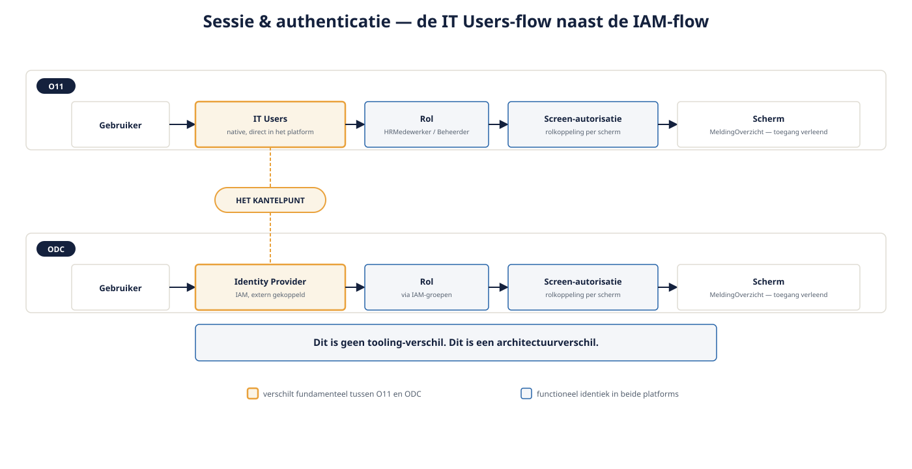

Deel 8 — Beveiliging basis: rollen, screen-autorisatie, sessie
Slidedeck · Ductus-cursus OutSystems · Niveau 1 — Fundament · deel 8 van 30 · 13 slides
Slide 1 — Title: OutSystems: Fundament
OutSystems: Fundament
Deel 8 — Beveiliging basis: rollen, screen-autorisatie, sessie
Slide 2 — Bullets: Rollen
Rollen
- Naam gekoppeld aan een groep gebruikers
HRMedewerkerenMeridiaanBeheerder- Ontwerp vanaf het begin, niet achteraf
Slide 3 — Section: Screen-autorisatie
Screen-autorisatie
Slide 4 — Bullets: Wie mag hier komen
Wie mag hier komen
- Rolkoppeling per scherm
- Platform handelt toegang-geweigerd zelf af
- Andere laag dan validatie: gaat over de gebruiker, niet de data
Slide 5 — Statement: Autorisatie zegt wie mag kijken.
Autorisatie zegt wie mag kijken.
Niet wát ze zien.
Slide 6 — Opdracht: Opdracht 8.1 — Rol, autorisatie of datafilter?
Opdracht 8.1 — Rol, autorisatie of datafilter?
Drie situaties bij Verzuimmeldingen.
→ Werkboek 8.1
Slide 7 — Section: Sessie en authenticatie — het echte kantelpunt
Sessie en authenticatie — het echte kantelpunt
Slide 8 — Table: O11 versus ODC: fundamenteel verschil
O11 versus ODC: fundamenteel verschil
| O11 | ODC | |
|---|---|---|
| Gebruikersbeheer | Native IT Users, direct in platform | IAM-first, gekoppelde identity provider |
| Externe IdP | Optioneel, aparte configuratie | Standaarduitgangspunt |
| Bij Meridiaan | Oudere satellietapps: grotendeels IT Users | Nieuwbouw: IAM-koppeling |

Slide 9 — Statement: Dit is geen tooling-verschil.
Dit is geen tooling-verschil.
Dit is een architectuurverschil.
Slide 10 — Opdracht: Baan A / Baan B
Baan A / Baan B
A — Rollen + IT Users configureren in Service Studio
B — Rollen + IAM-koppeling in ODC Studio
→ Werkboek, eigen baan
Slide 11 — Opdracht: Reflectieopdracht 8.2
Reflectieopdracht 8.2
Waarom is screen-autorisatie alleen niet genoeg?
→ Werkboek 8.2
Slide 12 — Bullets: Kernpunten deel 8
Kernpunten deel 8
- Rollen + screen-autorisatie: wie mag een scherm openen
- Datafilter in de Aggregate: wat ziet die gebruiker daarbinnen — apart nodig
- O11: native IT Users; ODC: IAM-first — een wezenlijk platformverschil
- Vervolgt in deel 17 (beveiliging serieus) en deel 23 (migratie)
Slide 13 — Section: Volgende deel: REST consumeren en exposen
Volgende deel: REST consumeren en exposen